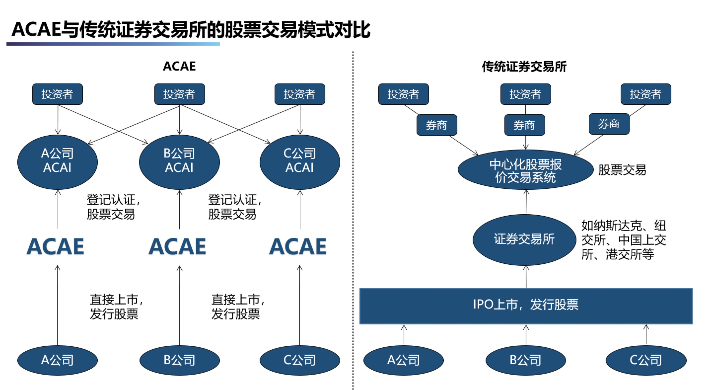

会员服务>会员服务>会员服务
ACAI
ACAI，即单体企业股票交易系统，为会员企业提供交易服务、企业相关资讯服务；企业节点独立运行，无中间机构参与，投资者可直接端对端交易。在会员企业节点ACAI系统，关联本企业相关交易，上传信息披露文件，财报以及公司新闻动态。
ACAI具有一系列跨时代的创新：
- 节省巨额的承销费用，减少上市成本，降低对投行的过度依赖。 不通过传统上市流程发行新股或募集新资金，不需要投行进入、也不需要路演和承销商，可省却大量费用。
- 提高现有股东的股票流动性。 通过直接上市，现有股东将可以直接出售股票，而不受传统上市所要求的“锁定期”的限制，这为公司投资者、员工提供了更便捷的变现机会。
- 为所有投资者提供公平的信息和机会。 通过直接上市，不再有承销商、不再有流通限制，不再有IPO股票分配和优惠待遇。
- 简化上市运作，不再是繁琐的上市程序 直接上市向证监会提交涵盖完整财务信息的文件，不再象IPO公司那样马不停蹄地穿梭于各地对机构投资者进行路演，直接跨过了这一繁琐的程序。
- 市场驱动的价格发现。 来自于公司对自身规模、品牌、透明度文化、商业模式的信心，相信市场驱动的价格发现。
直接上市：
- ACAI交易结算的过程也是交易双方分别记账的过程，在传统的交易模式中，记账过程是交易双方分别进行的，不仅要耗费大量人力物力，而且容易出现对账不一致的情况，影响结算效率。
- 通过ACAE平台系统，交易双方或多方可以共享一套可信、互认的账本，所有的交易清结算记录全部在链可查，安全透明、不可篡改、可追溯，极大提升对账准确度和效率，同时有效避免中心攻击。
- 通过搭载智能合约，还可以实现自动执行的交易清结算，大大降低对账人员成本和差错率，特别是在跨境支付场景下，效果尤其明显。
去中心化:
- 上市企业通过单体的企业级应用ACAI按规则上传披露信息，并可分布式记帐到服务平台ACAE展示，接受统一监管，简单易操作。
- 投资者通过服务平台ACAE申请统一交易帐号，直接登陆各ACAI进行股票交易，所有交易通过ACAI独立完成，并通过区块链分布式记帐进行数据传输及存储，即时性强、安全性高。
- 24小时交易制度，满足全球不同时区投资者的即时性投资需求，有效促进股票交易量。
- 独立的企业级应用ACAI，有利于企业进行独立宣传。
- 通过独立的企业级应用ACAI进行股票交易，不受所谓大盘影响。
- ACAE接受创新型发展中中小企业挂牌上市，有利于推动经济的规范化全面发展。
单体交易:
